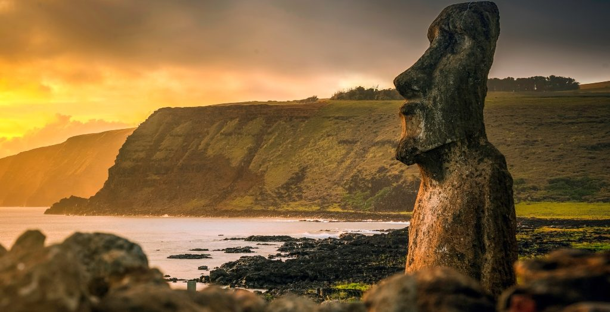
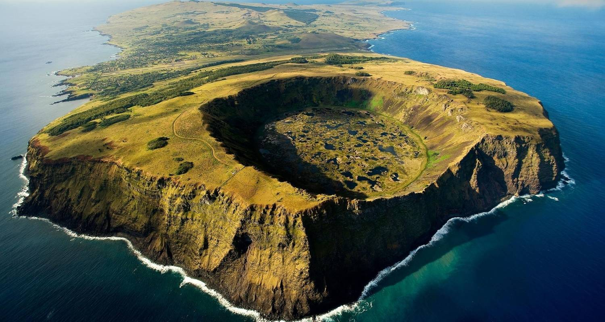

🏔️ Offres exclusives – Chili

Patagonie Sauvage & Luxe – 7 nuits
Lodges haut de gamme, glaciers majestueux, randonnées privées et navigation au pied des icebergs.
À partir de 3 190€ / personne Voir l’offre

Désert d’Atacama & Étoiles – 5 nuits
Le désert le plus aride du monde, lagunes colorées, geysers, nuit dans un hôtel d’exception et observation astronomique.
À partir de 2 450€ / personne Voir l’offre

Chili & Rapa Nui – Voyage Mythique – 10 nuits
Combinez le Chili continental et l’île de Pâques : volcans, sites archéologiques sacrés, Moaï et traditions polynésiennes.
À partir de 4 250€ / personne Voir l’offre